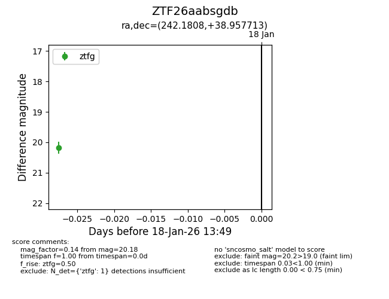
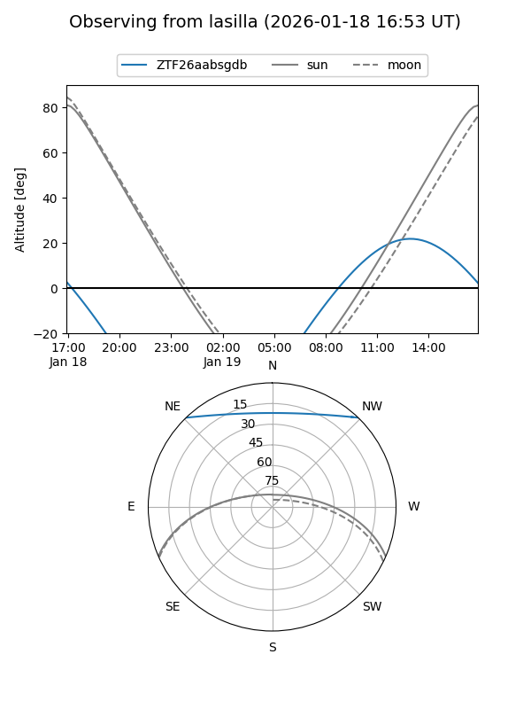
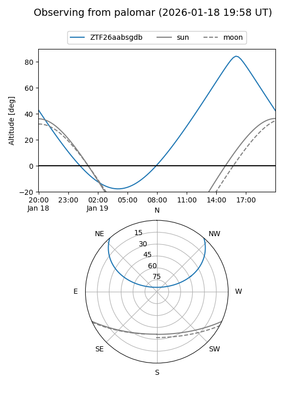

ZTF26aabsgdb
Target ZTF26aabsgdb at 2026-01-18 13:50
Aliases and brokers:
FINK: link
Lasair: link
ALeRCE: link
alt names
ZTF26aabsgdb (ztf,fink_ztf)
Coordinates:
equatorial (ra, dec) = 242.1808,+38.95771
equatorial (HMS+DMS) = 16:08:43.40,+38:57:27.77
galactic (l, b) = (62.0484,+47.54404)
Flags:
Photometry:
last ztfg=20.18
1 ztfg detections
Lightcurve

Visibility


Additional plots